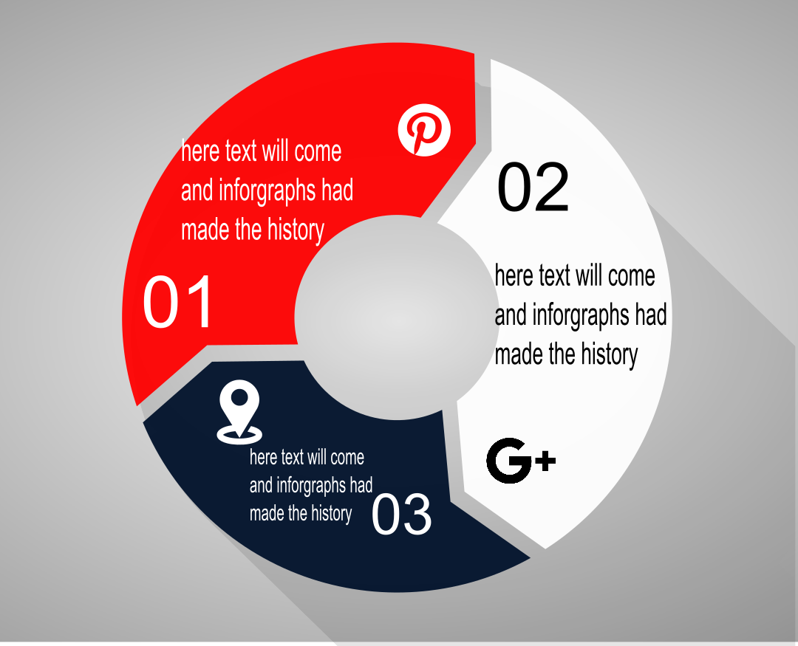

Meet new and interesting Inforgraphy blogs.


Since infographics exploded onto the graphic design scene about ten years ago, they’ve become a staple for communication in classrooms, in the workplace, and across the web.
According to the Oxford English Dictionary, an infographic (or information graphic) is “a visual representation of information or data”.

some beautiful infrographs using motion graphics